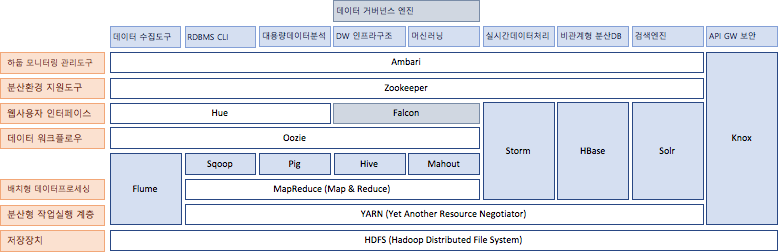
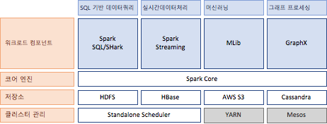

07. Big Data
시스템 구성도


데이터처리 패키지 비교
| Feature | Strom | Spark | Samza |
|---|---|---|---|
| Delivery Semantics | At Least Once Exactly-Once with Trident | Exactly Once Except in some failure scenarios | At Least Once |
| State Management | Stateless Roll your own or use Trident | Stateful Writes state to storage (HDFS) | Stateful Embeded key-value store |
| Latency | Sub-Second | Seconds Depending on batch size | Sub-Second |
| Language Support | Any JVM-languages, Ruby, Python, Javascript, Perl | Scala, JAVA, Python, R | Scala, JAVA JVM-languages only |
| Processing Model | one-at-a-time | micro-batch / batch | one-at-a-time |
| Backpressure | O | O | X |
| Stream Source | Spouts | Receivers | ConSumers |
| Stream Primitive | Tuple | Dstream | Message |
| Stream Computation | Bolts | Transformations Window operations | Tasks |
결론
Spark는 Latency 에서 다소 느린 점이 있지만, exactly-once 전송을 제공하고 다양한 워크로드 컴포넌트를 제공한다.
Storm은 Latency 에서 유리하지만, Trident를 적용해야 exactly-once 전송을 제공하며 상태관리기능도 Trident를 통해서 적용하거나 자체개발을 해야 한다.
Samza는 Latency 에서 유리하지만, 아직 마이너버전이고 At Least Once 전송만을 제공하고 있다.
검색 패키지 비교
| Feature | Solr | Elastic Search |
|---|---|---|
| Community & Developers | Apache Software Foundation and community support | Single commercial entity and its employees |
| Node Discovery | Apache Zookeeper, mature and battle-tested in a large number of projects | Zen, built into Elasticsearch itself, requires dedicated master nodes to be split brain proof |
| Shard Placement | Static in nature, requires manual work to migrate shards, starting from Solr 7 – Autoscaling API allows for some dynamic actions | Dynamic, shards can be moved on demand depending on the cluster state |
| Caches | Global, invalidated with each segment change | Per segment, better for dynamically changing data |
| Analytics Engine | Facets and powerful streaming aggregations | Sophisticated and highly flexible aggregations |
| Optimized Query Execution | Currently none | Faster range queries depending on the context |
| Search Speed | Best for static data, because of caches and uninverted reader | Very good for rapidly changing data, because of per-segment caches |
| Analysis Engine Performance | Great for static data with exact calculations | Exactness of the results depends on data placement |
| Full Text Search Features | Language analysis based on Lucene, multiple suggesters, spell checkers, rich highlighting support | Language analysis based on Lucene, single suggest API implementation, highlighting rescoring |
| DevOps Friendliness | Not fully there yet, but coming | Very good APIs |
| Non-flat Data Handling | Nested documents and parent-child support | Natural support with nested and object types allowing for virtually endless nesting and parent-child support |
| Query DSL | JSON (limited), XML (limited) or URL parameters | JSON |
| Index/Collection Leader Control | Leader placement control and leader rebalancing possibility to even the load on the nodes | Not possible |
| Join | Currently none | Parent_type/Children_type |
| Machine Learning | Built-in – on top of streaming aggregations focused on logistic regression and learning to rank contrib module | Commercial feature, focused on anomalies and outliers and time-series data |
| Ecosystem | Modest – Banana, Zeppelin with community support | Rich – Kibana, Grafana, with large entities support and big user base |
| RDBMS Ingestion | dataimportHandler | logstash |
데이터 수집 패키지 비교
| Feature | Flume | Fluentd | Log Stash | Sqoop |
|---|---|---|---|---|
| 언어 | Java | Ruby | Ruby & Java | Java |
| 입력 | Avro Source | Dummy Input | Beats Input | FTP Connector |
| Exec Source | Exec Input | Elastic Search Input | Hbase Connector | |
| HTTP Source | Forward Input | Exec Input | HDFS Connector | |
| JMS Source | HTTP Input | File Input | JDBC Connector | |
| Kafka Source | Monitor Agent Input | HTTP Input | Kafka Connector | |
| NetCat TCP Source | Syslog Input | IRC Input | Kite Connector | |
| NetCat UDP Source | Tail Input | JDBC Input | ||
| Scribe Source | TCP Input | JMS Input | ||
| Sequence Generator Source | UDP Input | Kafka Input | ||
| Spooling Directory Source | Windows Eventlog Input | Log4J Input | ||
| Stress Source Source | Pipe Input | |||
| Syslog Source | Rabbit MQ Input | |||
| Taildir Source | Redis Input | |||
| Thrift Source | S3 Input | |||
| Twitter 1% firehose Source | Stdin Input | |||
| STOMP Input | ||||
| Syslog Input | ||||
| TCP Input | ||||
| UDP Input | ||||
| XMPP Input | ||||
| 출력 | Avro Sink | Copy Output | CSV Output | Accumulo Connector |
| Elastic Search Sink | Elastic Search Output | Elastic Search Output | FTP Connector | |
| File Roll Sink | Exec Filter Output | Email Output | HBase Connector | |
| HBase Sink | Exec Output | Exec Output | HDFS Connector | |
| HDFS Sink | File Output | File Output | HIVE Connector | |
| Hive Sink | Forward Output | HTTP Output | JDBC Connector | |
| HTTP Sink | Mongo Output | InfluxDB Output | Kafka Connector | |
| IRC Sink | Mongo Replset Output | IRC Output | Kate Connector | |
| Kafka Sink | Null Option | Kafka Output | ||
| Kite Dataset Sink | Relabel Ouput | Mongo DB Output | ||
| Logger Sink | Rewrite Tag Filter Output | Nagios Output | ||
| MorphlineSolr Sink | Round Robin Output | Open TSDB Output | ||
| Null Sink | S3 Output | Pipi Output | ||
| Thrift Sink | Stdout Output | Rabbit MQ Output | ||
| WebHDFS Output | Redis Output | |||
| S3 Output | ||||
| Solr Http Output | ||||
| Stdout Output | ||||
| STOMP Output | ||||
| Syslog Output | ||||
| TCP Output | ||||
| UDP Output | ||||
| Web HDFS Output | ||||
| XMPP Output | ||||
| 버퍼 | Memory Channel | Memory Buffer | Memory Queue | |
| JDBC Channel | File Buffer | Presistent Queue | ||
| Kafka Channel | ||||
| File Channel | ||||
| Spillable Memory Channel | ||||
| Pseudo Transaction Channel | ||||
| 구성 | Single | |||
| Multi-Agent Flow | ||||
| Consolidation | ||||
| Multiplexing |
메세지 전송 패키지 비교
| Feature | Kafka | Rabbit MQ |
|---|---|---|
| 클라이언트 | C / C++ | Clojure |
| Python | Erlang | |
| Go (AKA golang) | Haskell | |
| Erlang | Perl | |
| .Net | Scala | |
| Clojure | Java | |
| Ruby | Python | |
| Node JS | Ruby | |
| Proxy (HTTP REST, etc) | PHP | |
| Perl | Swift | |
| Stdin / Stdout | .Net (C#) | |
| PHP | Objective-C | |
| Rust | JS | |
| Alternative Java | Go | |
| Storm | Elixir | |
| Scala DSL | ||
| Swift | ||
| 기본 메시징 처리 방식 | Topic 방식 (발행 - 구독) | Queue 방식 (발생 - 소비) |
| Consumer Group 설정해서 Queue 방식 사용 | MQTT 를 통해서 Topic 방식 사용 | |
| 클라이언트 동작 | Client Pull | Server Push |
| 지원 프로토콜 | TCP | AMQP |
| MQTT | ||
| STOMP | ||
| 저장소 | 파일 | 메모리 / 파일 |
결론
Kafka는 IO 방식과 프로토콜의 오버 헤드가 적어 스트리밍 형태의 데이터 전송에 적합
Rabbbit MQ는 표준 프로토콜을 제공하고 큐에 데이터가 유입되면 이벤트가 발행해서 클라이언트에 데이터를 전달하는 이벤트 처리에 적합 하다.